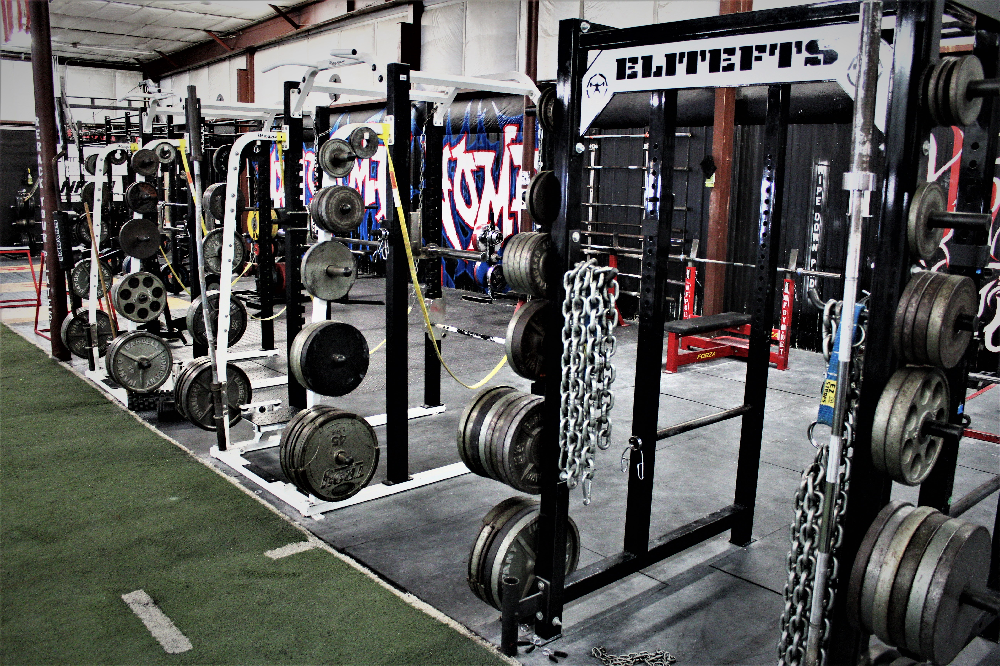
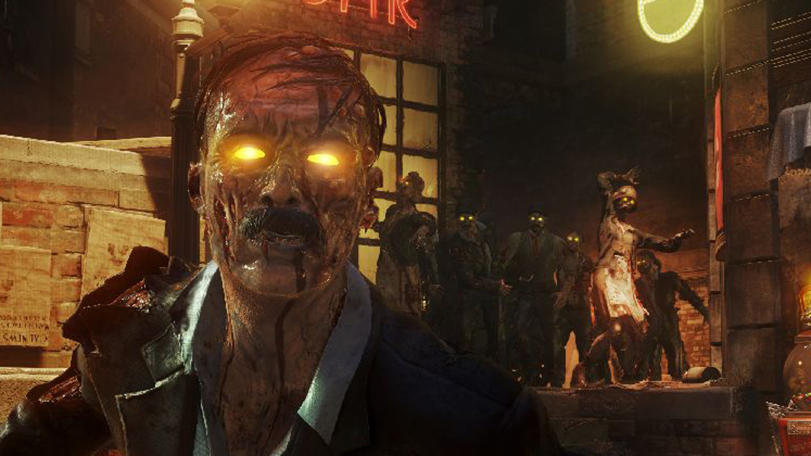

I love to get active all the time. I am an avid weight lifter who loves to partake in just about any and all sports. Some of my favorites are water skiing, basketball, and running.
When I am not coding, I love to play video games. Some of my favorite games include: Minecraft, Call of Duty, and Black Ops 3 Zombies.
